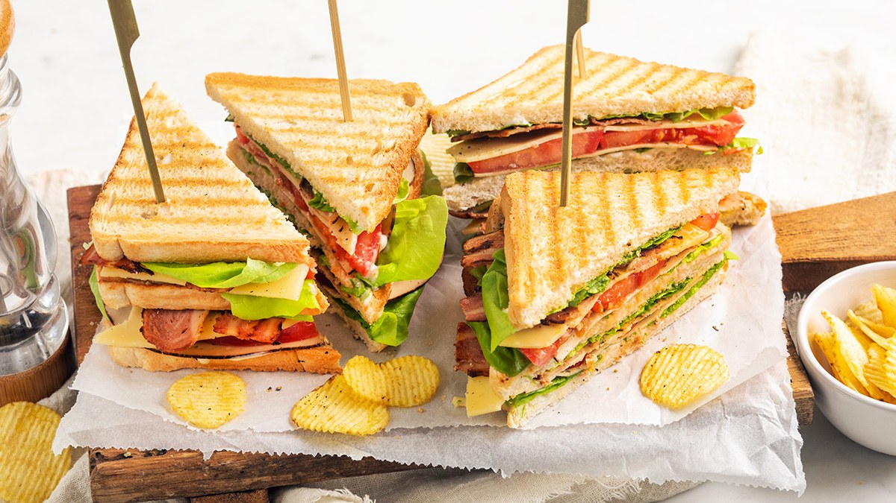

Nieuwe Recepten

Bananenbrood met blauwe bessen
10 M + 50 M OVENTIJD

Smoothie banaan en yoghurt
5 M
Salade met gerookte zalm en avocado
15 M
Ontbijt
Quesadilla’s met roerei
25 M
Havermout met banaan en chocolade
10 M

Aardbeien smoothie
10 M
Lunch

Club sandwich
15 M

Bananen pannenkoeken
20 M
Lunch wraps
25 M
Dinner
Pitabroodje gezond
20 M

Aubergine curry
30 M + 20 M OVENTIJD

Enchilada’s met kip
30 M + 20 M OVENTIJD